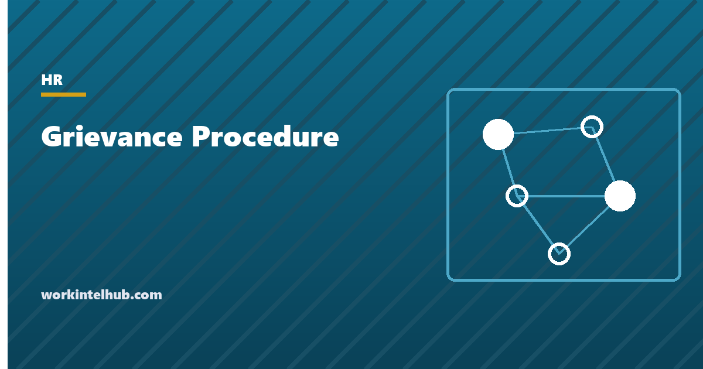

Grievance Procedure

A grievance procedure is the written route an employee follows to raise a concern about their work and get a decision on it. It is the general-purpose process, covering pay, hours, scheduling, workload, a manager's decision, or treatment by colleagues. It sits alongside the narrower routes for harassment, discrimination and safety. Its value to the employer is that concerns reach someone who can act on them before they reach an agency or a lawyer. Its value to the employee is a decision in writing, with reasons, within a stated number of days.
The generator below produces the procedure with your own timelines, for a union or non-union workforce. The rest of the page explains the four steps, the timelines that work, how union contract grievances differ, the retaliation rules that apply the moment a grievance is raised, and the record that should exist at the end.
Grievance procedure generator
Nothing typed here leaves your browser. The procedure is written for a US employer; where a collective bargaining agreement sets its own steps, the agreement controls.
The four steps
| Step | What happens | Typical timeline | Why it is there |
|---|---|---|---|
| 1. Informal | Employee raises it with the manager, in conversation or email | Response in 3 to 5 working days | Most concerns are misunderstandings or small fixes; this step resolves them without a file |
| 2. Written grievance | Employee submits a written statement to HR: what, when, who, what has been tried, what outcome is sought | Acknowledged in 2 working days | Fixes the facts while fresh and starts the clock |
| 3. Meeting and decision | An uninvolved manager meets the employee (with a companion), investigates, and issues a written decision with reasons | Meeting within 10 working days; decision within 10 more | The core of the procedure: someone without a stake looks at it and says why |
| 4. Appeal | Employee appeals in writing; a more senior, uninvolved manager decides | Appeal within 7 working days; decision within 10 | A second look catches the cases where step 3 got it wrong, and ends the internal process cleanly |
Two design points matter more than the day counts. The decision-maker at step 3 must not be the manager the grievance is about, and the employee must be allowed a companion. A procedure that routes a grievance about a manager back to that manager is one that employees will skip in favour of an outside agency. The complaint form is the step-2 document for harassment, discrimination, safety and retaliation matters, which have their own investigation rules; a grievance procedure should say that those routes exist and that using either one is fine.
Union and non-union procedures
In a unionised workplace the collective bargaining agreement almost always contains a grievance procedure. It usually has numbered steps, strict time limits (often as short as five or ten days at each step), union representation at every stage, and binding arbitration as the final step. That procedure controls for any matter covered by the agreement. An employer that bypasses it, or imposes a competing one, commits an unfair labour practice. The generator's union option adds the cross-reference and the representation right; it does not replace the contract's steps.
In a non-union workplace the employer designs the procedure and it is a policy, not a contract, which is why the handbook disclaimer matters (see the handbook acknowledgement page). Two points of law still apply. Employees have a protected right under the National Labor Relations Act to raise concerns about working conditions together. A procedure that forbids group grievances, or forbids employees from discussing their grievance with colleagues, is therefore unlawful. The generator includes a group-grievance clause and a confidentiality clause written to avoid that problem. And a procedure the employer publishes but does not follow is evidence in any later dispute, so the timelines should be ones the organisation can actually meet.
Retaliation and the record
The moment an employee raises a grievance, any adverse change to their duties, schedule, pay, evaluation or treatment will be read against that date. Retaliation for raising a complaint about discrimination, harassment, wages or safety is unlawful under federal and state law. Retaliation for a plain workplace grievance is not always a statutory claim, but it is the fact pattern that turns an ordinary dispute into a constructive-dismissal or wrongful-termination case. The practical rule is the one in the complaint form guide: the manager is told the no-retaliation rule in writing on the day, and any change to the employee's situation in the following months is reviewed by HR and documented with its unrelated reason.
The record at the end is the written grievance, the acknowledgement, the notes of the meeting, the written decision with reasons, any appeal and its decision, and a note of the follow-up conversation thirty days later. It lives in a confidential file, not the personnel file. A procedure that produces that file protects both sides; one that ends with a manager's memory protects neither. The progressive discipline and write-up pages cover the documents on the other side of the same relationship.
Key takeaways
- A grievance procedure is the written route for raising a work concern and getting a reasoned decision within stated days.
- Four steps: informal with the manager, written grievance to HR, meeting and decision by an uninvolved manager, appeal to someone more senior.
- The decision-maker must not be the subject of the grievance, and the employee may bring a companion.
- Union contracts set their own steps and time limits, usually ending in arbitration; the contract controls.
- Group grievances and discussing a grievance with colleagues are protected; the procedure cannot forbid them.
- Tell the manager the no-retaliation rule on the day, review any later change to the employee's situation, and keep the file separate.
Frequently asked questions
What is a grievance procedure?
A written process an employee follows to raise a concern about pay, hours, scheduling, workload, a decision or treatment at work, and to receive a decision with reasons within set timelines. It usually has an informal step, a written grievance, a meeting with an uninvolved manager, and an appeal.
What are the steps in a grievance procedure?
Informal discussion with the manager; a written grievance to HR stating what happened and what outcome is sought; a meeting with a manager not involved in the matter, followed by a written decision; and an appeal to a more senior uninvolved manager whose decision ends the internal process. The generator on this page sets the timelines for each.
How long should a grievance take?
Most procedures aim to complete steps one to three within about four weeks: a few days for the informal response, ten working days to the meeting, ten more to the decision. Appeals add two to three weeks. Union contracts often set shorter limits at each step. Whatever the numbers, the employer must be able to meet them.
Can an employee bring someone to a grievance meeting?
Yes, and the procedure should say so. In unionised workplaces a union representative has the right to attend. In non-union workplaces a colleague is the usual companion; allowing it costs nothing and makes the decision harder to challenge.
Is a grievance procedure legally required?
Not by federal law for non-union employers, though some states and many public-sector rules require one, and union contracts almost always contain one. Employers adopt them because concerns that reach HR with a process attached are resolved more cheaply than concerns that reach an agency or a lawyer without one.
What is the difference between a grievance and a complaint?
In most US workplaces 'complaint' refers to harassment, discrimination, safety or retaliation matters that trigger a formal investigation, and 'grievance' to the general process for other work concerns. The two routes should cross-reference each other so that an employee using either one is treated correctly.